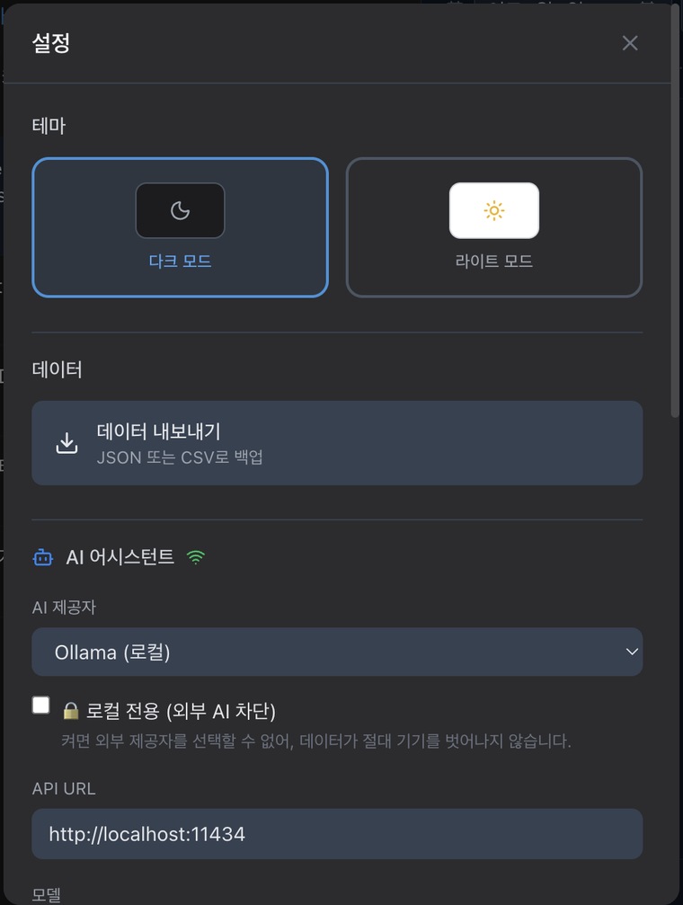
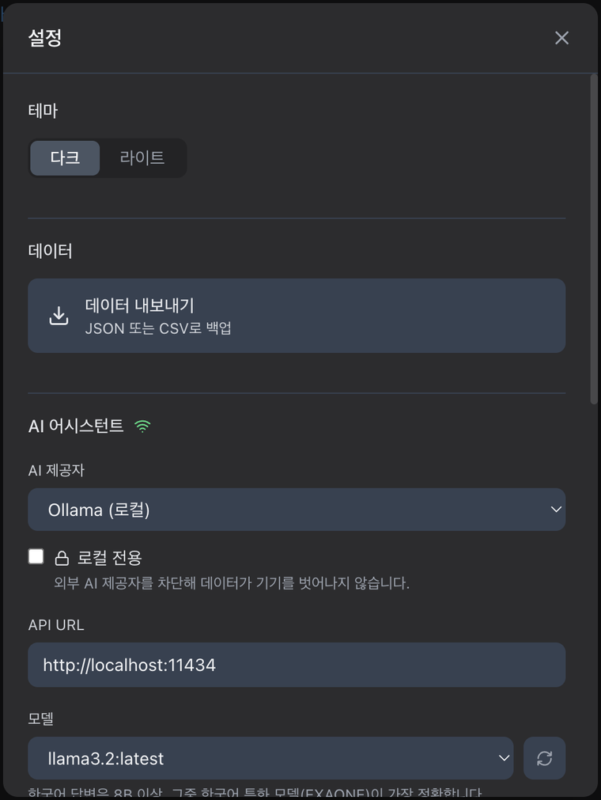
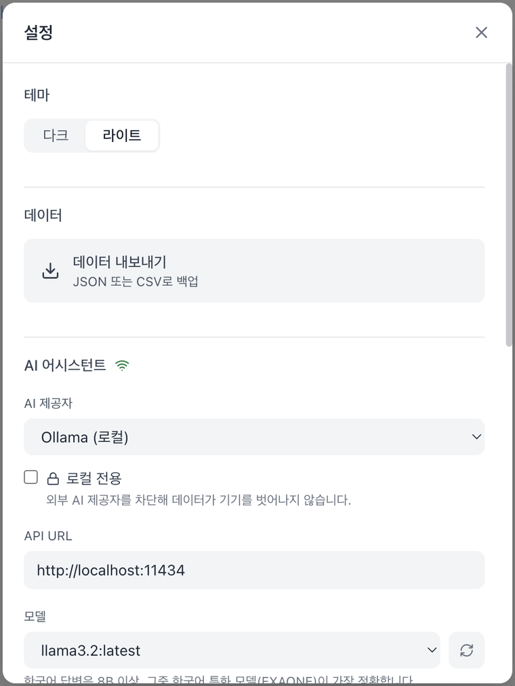
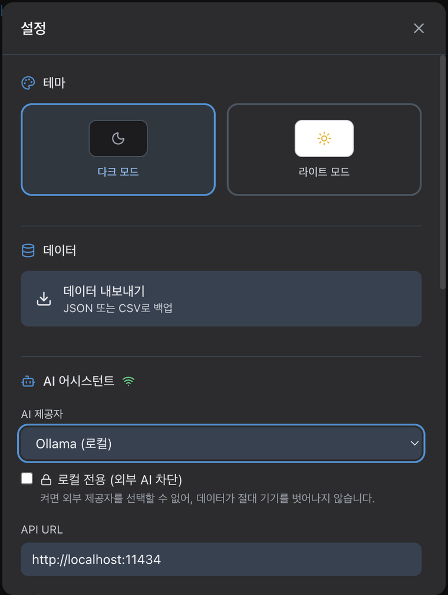
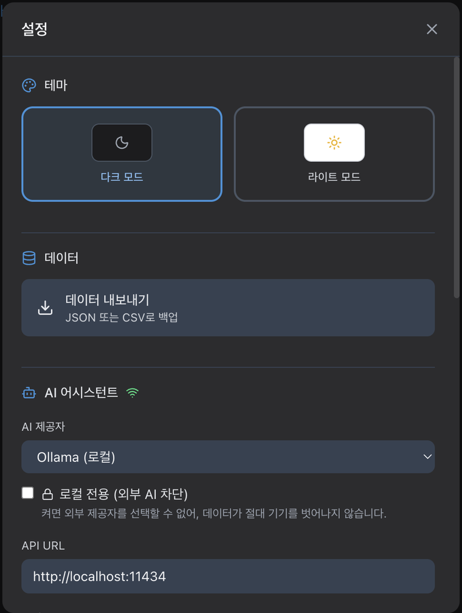
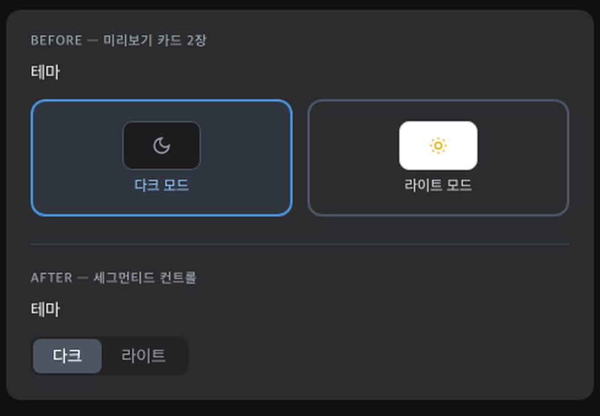

haru · 디자인 검토
실행 중인 haru v2.0.0의 설정 모달을 라이브 캡처하고, 렌더링된 색상의 대비를 실측해 25건을 확인했습니다. 이 중 20건은 수정해 커밋했고, 제품 판단이 필요한 5건은 제안으로 남겼습니다. 이후 피드백을 받아 테마 선택 UI를 다시 설계했습니다.
가장 심각한 건 대비였습니다. 특히 “이 제공자를 사용하면 대화·할일 내용이 외부 서버로
전송됩니다”라는 프라이버시 경고가 기본 테마인 다크 모드에서 2.32:1로,
패널에서 가장 중요한 문장이 가장 안 읽히는 상태였습니다. 그다음은 포커스 링 전무로,
렌더러 전체에 focus-visible/focus:ring 스타일이 단 한 건도 없었습니다.
getComputedStyle로 렌더링된 색을 읽고, 반투명 배경을 하위 배경 위에 합성한 뒤 WCAG 공식으로 계산. 계산값과 실측값이 일치(예: 8.10 vs 8.09).npm run build 후 번들 CSS에 .focus-visible\:ring-2 등이 실제로 생성되는지 직접 확인.--user-data-dir로 dev 빌드를 띄워 수정 후 화면을 다크/라이트 모두 캡처.tsc --build --force 통과, biome lint 78파일 clean, vitest 222 tests 통과.라디오 버튼 (settable) 다크 / 라이트가 잡히는 것으로 네이티브 radio 구현도 확인./Applications/haru.app은 별도로 npm run package를 돌려 재설치해야 반영됩니다.
두 빌드의 package.json 버전이 모두 2.0.0이라 앱 화면의 “haru v2.0.0” 표시로는
신구를 구분할 수 없으니, 패키징 시 버전을 올리는 것을 권합니다.





| 대상 | 테마 | 수정 전 | 수정 후 | 비고 |
|---|---|---|---|---|
| 외부 전송 경고 문구 | 다크 | 2.32:1 | 8.09:1 | amber-700 → amber-300. 기본 테마이자 가장 중요한 경고 |
| 외부 전송 경고 문구 | 라이트 | 4.65:1 | 6.56:1 | 턱걸이 통과 → 여유 확보 |
| 힌트·설명 텍스트 | 다크 | 2.88:1 | 5.49:1 | gray-500 → gray-400. 8곳 이상에 적용 |
| 힌트·설명 텍스트 | 라이트 | 2.54:1 | 4.83:1 | gray-400 → gray-500 |
| 연결 성공 문구·아이콘 | 라이트 | 2.28:1 | 5.02:1 | green-500 → green-700 |
| 연결 실패 문구 | 다크 / 라이트 | 3.70 / 3.76 | 5.04 / 4.83 | red-500 → red-400 / red-600 |
| 채움 버튼 + 흰 글자 | 공통 | 3.34:1 | 5.17:1 | 모델 설치 버튼. primary-500 → primary-700 |
| 선택된 테마 라벨 | 라이트 | 3.01:1 | 17.74:1 | 2차에서 카드가 세그먼티드 컨트롤로 바뀌며 선택 칸이 흰 배경 + gray-900이 됨 |
| 비선택 세그먼트 | 라이트 | — | 6.87:1 | gray-500은 트랙(gray-100) 위에서 4.39:1로 미달이라 gray-600 |
| 업데이트 알림 버튼 본문 | 라이트 | 3.78:1 | 4.75:1 | primary-500 → primary-700 |
경고 박스가 bg-amber-500/10 text-amber-700 한 벌만 있고 다크 대응이 없었다. 어두운 배경 위 어두운 주황이라 2.32:1.
패널에서 사용자에게 가장 중요한 정보(데이터가 외부로 나간다)가 가장 안 보였다. 다크가 기본 테마라 대부분의 사용자가 이 상태를 봤다.
역할별 색상 토큰(제목 > 라벨 > 힌트)을 도입해 3단계 위계를 유지하면서 두 테마 모두 4.5:1을 넘도록 조정. 상태 아이콘(Wifi·WifiOff·CheckCircle2)도 테마 대응.
렌더러 전체 grep 결과 focus-visible/focus:ring 0건. Tab으로 이동해도 지금 어디에 있는지 화면상 단서가 없었다. 설정의 인터랙티브 요소 14곳에 링 추가 — 버튼은 focus-visible, 입력 필드는 focus.
Tailwind JIT는 소스에 리터럴로 적힌 클래스만 생성한다. 문자열을 조합해 만들면 조용히 아무것도 적용되지 않으므로 상수로 전부 적어 두고 빌드 산출물에서 생성을 확인했다.
카드 전체가 max-h-[80vh] overflow-y-auto 스크롤 컨테이너라 제목과 X가 같이 밀려 올라갔다. 내용이 보이는 높이의 약 2.8배라 체감이 컸다. flex-col + 본문만 스크롤로 헤더 고정.
hover:text-gray-300이 테마 구분 없이 걸려 있어, 흰 배경에서 hover 시 1.6:1이 됐다. 같은 프로젝트의 ExportDialog는 이미 테마별로 올바르게 처리하고 있었다 — 설정에만 빠진 케이스.
저장 버튼 blue-600, 설치 버튼 primary-500, Bot 아이콘 blue-500. primary 토큰이 있는데도 쓰이지 않았다. 전부 primary 스케일로 통일하면서 채움 버튼은 AA를 만족하는 primary-700으로.
다섯 섹션 중 AI·단축키만 아이콘이 있고 테마·데이터·버전 정보는 텍스트만 있어, 같은 위계인데 다르게 보였다. SectionHeading 하나로 통일.
1차에서는 모든 제목에 아이콘을 추가하는 방향으로 맞췄는데, 그건 장식을 늘리는 선택이었다. 2차에서 전부 제거하는 쪽으로 뒤집었다 — 의미가 있는 아이콘(경고·잠금·내려받기·연결 상태)만 남겼다.
앱 전체가 lucide 아이콘을 쓰는데 설정에만 🔒·⚠️ 이모지가 섞여 있었다(플랫폼마다 렌더가 달라 정렬도 틀어진다). Lock·AlertTriangle로 교체. 체크박스는 accent-color가 없어 다크 패널 위에 흰 상자로 떠 있었다.
섹션 사이 24px, 구분선 아래 16px — 차이가 8px뿐이라 그룹핑 신호가 약했다. 32/16으로 조정.
단축키 목록에 “할 일 추가”와 “선택 태스크 삭제”가 나란히 있었다. 앱 전체가 쓰는 ‘할 일’로 통일.
useKeyboardShortcuts.ts와 9개 항목을 1:1 대조한 결과, Cmd+D·Delete·1-4는 할 일이 선택돼 있어야만 동작하는데 문구에 그 전제가 없었다. 선택 없이 누르면 아무 일도 안 일어나는데 이유를 알 방법이 없다. Cmd+N·Cmd+Shift+A도 ‘추가’가 아니라 토글이다.
| 키 | 수정 전 | 수정 후 |
|---|---|---|
| Cmd+N | 할 일 추가 | 할 일 추가 열기/닫기 |
| Cmd+Shift+A | 빠른 추가 | 빠른 추가 열기/닫기 |
| Cmd+D | 오늘 마감일 설정 | 선택한 할 일을 오늘 마감으로 |
| Delete | 선택 태스크 삭제 | 선택한 할 일 삭제 |
| 1-4 | 우선순위 변경 (없음~높음) | 선택한 할 일 우선순위 (없음~높음) |
제목은 “AI 어시스턴트”인데 상태 문구만 “AI 서비스에 연결되었습니다”였다. 또 Ollama 안내가 “8B 이상 권장”과 “EXAONE이 더 정확”으로 겹쳐 두 줄이었다 — 한 줄로 합쳤다. EEVE는 원클릭 설치 경로가 없어 언급만 하고 끝나므로 제거.
“업데이트 확인 중...” → “확인 중…”. 버전 카드의 “Electron + React”는 사용자에게 의미가 없어 제거.
창 제목이 아직 TickTick이었다. 설정 화면은 “haru v2.0.0”이라 표시하는데 윈도우 타이틀과 접근성 트리에는 옛 이름이 남아 있었다(electron-builder의 productName은 이미 haru). 루트 VERSION 파일도 1.4.1에 멈춰 package.json(2.0.0)과 어긋나 있었다.
aria-label="설정 닫기",
테마 카드에 aria-pressed를 추가했습니다. 스크린리더에서 닫기 버튼은 이름이 없었고,
두 테마 카드는 어느 쪽이 선택됐는지 알 수 없었습니다.
1차 결과를 보고 받은 지적: ① 2지 선택에 공간을 너무 씀 ② 디자인·아이콘·설명이 AI스러움 ③ 직관적이지 않음. 셋 다 맞는 지적이었습니다.
이전 테마 선택은 카드 두 장에 “미리보기”를 넣은 형태였는데, 그 미리보기는 실제 테마를 보여주는 게 아니라 아이콘 하나를 담은 상자였습니다. 즉 정보를 주지 않으면서 공간만 쓰는 장식이었고, 카드가 인터랙션의 단위도 아니었습니다(누르는 대상은 “테마 값” 하나뿐). 카드로 만들 이유가 없었습니다.

offsetHeight로 측정. 변경 전 마크업은 소스에서 제거되며 Tailwind가 해당 클래스를 더 이상 생성하지 않으므로, 원본과 같아 보이도록 색만 인라인으로 고정해 재현했습니다.| 변경 전 | 변경 후 | 차이 | |
|---|---|---|---|
| 테마 섹션 전체 | 128px | 64px | −50% |
| 컨트롤만 | 96px | 32px | −67% |
<input type="radio"> + <label>로 구현했습니다. role="radio"를 붙인 버튼보다 낫습니다 — 방향키 이동이 공짜로 따라오고, 스크린리더에 “2개 중 1번째”가 그대로 전달됩니다. 숨긴 input의 포커스는 peer-focus-visible로 라벨에 링을 그립니다.AI 어시스턴트 섹션이 패널 높이의 약 60%를 차지합니다. 테마와 데이터는 각각 한 줄인데, 480px 단일 컬럼에 5개 섹션이 쌓여 내용이 보이는 높이의 약 2.8배입니다. 가장 자주 쓸 설정(테마)과 가장 드물게 쓸 설정(모델 URL)이 같은 스크롤 위에 있습니다.
선택지: ① 왼쪽 탭/사이드 목록으로 분리 ② AI 고급 필드(API URL·모델·기록 개수)를 접기 ③ 모달 폭을 560~600px로 넓혀 스크롤 자체를 줄이기. 구조 변경이라 별도로 판단하시는 게 맞다고 봤습니다.
테마는 즉시 반영되는데 AI 설정은 “저장 및 연결 테스트”를 눌러야 반영됩니다. 두 방식이 한 화면에 섞여 있고 시각적 구분이 없습니다. API URL을 고치고 Esc를 누르거나 배경을 클릭하면 입력이 그냥 버려지는데 경고도, 되돌릴 방법도 없습니다.
dirty 상태 추적 + 닫기 시 확인이 필요해 동작 변경입니다. “명백한 결함 수정” 범위를 넘는다고 판단했습니다.
현재 Theme = 'dark' | 'light'로 시스템 연동 옵션이 없습니다. macOS 앱의 관례이고,
테마가 설정 화면의 첫 섹션이라 눈에 띄는 공백입니다. 타입·스토어·matchMedia 구독이 필요합니다.
Cmd+N 형태취향macOS 전용 앱이라면 ⌘N, ⌘⇧A, ⌫ 심볼이 플랫폼 관례에 가깝습니다.
다만 텍스트 표기도 충분히 읽히고 취향의 영역이라 손대지 않았습니다.
1200pt 창에서 40%만 씁니다. AI 섹션의 밀도를 생각하면 560~600px가 스크롤을 눈에 띄게 줄입니다. F-012와 함께 결정하는 게 자연스럽습니다.
ExportDialog를 거치지 않고 바로 저장 대화상자를 엽니다. 확장자(.json/.csv)로 형식이 결정되므로 “JSON 또는 CSV로 백업”이라는 설명은 정확합니다. 다만 앱에 내보내기 UI가 두 벌 존재합니다.{status}는 Ollama가 주는 영문 그대로입니다(“pulling manifest” 등). 한글 문장 안에 영문이 섞이지만 외부 API 값이라 손대지 않았습니다.<select> 팝업을 조작할 수 없습니다. 그래서 외부 제공자 경고는 앱에서 직접 띄우지 못하고, 빌드된 실제 CSS로 렌더 하네스를 만들어 픽셀을 측정했습니다.| 커밋 | 내용 |
|---|---|
932f64a | F-001/002/008 — 설정 화면 대비를 WCAG AA로 올림 |
ee08427 | F-004/005 — 헤더 고정, 라이트 모드 닫기 버튼 hover 수정 |
79bfdce | F-006/007 — 파랑 3종 혼용을 primary 토큰으로 통일 |
344a9be | F-003 — 설정 화면에 키보드 포커스 링 추가 |
27dc156 | F-010/011/015 — 섹션 제목 통일, 이모지를 lucide로, 체크박스 스타일 |
ea3793f | F-013~019 — 용어 통일, 단축키 문구를 실제 동작과 일치 |
b01b386 | F-020/022/023 — 섹션 여백, 창 제목, VERSION 정합 |
4e6a263 | 2차 — 테마 선택을 세그먼티드 컨트롤로, 장식용 아이콘 제거 |